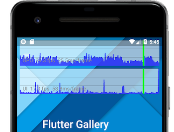
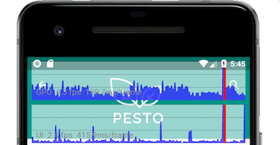

Flutter performance profiling
It’s been said that “a fast app is great, but a smooth app is even better.” If your app isn’t rendering smoothly, how do you fix it? Where do you begin? This guide shows you where to start, steps to take, and tools that can help.
Diagnosing performance problems
To diagnose an app with performance problems, you’ll enable the performance overlay to look at the UI and raster threads. Before you begin, make sure that you’re running in profile mode, and that you’re not using an emulator. For best results, you might choose the slowest device that your users might use.
Connect to a physical device
Almost all performance debugging for Flutter applications should be conducted on a physical Android or iOS device, with your Flutter application running in profile mode. Using debug mode, or running apps on simulators or emulators, is generally not indicative of the final behavior of release mode builds. You should consider checking performance on the slowest device that your users might reasonably use.
Run in profile mode
Flutter’s profile mode compiles and launches your application almost identically to release mode, but with just enough additional functionality to allow debugging performance problems. For example, profile mode provides tracing information to the profiling tools.
Launch the app in profile mode as follows:
-
In VS Code, open your
launch.jsonfile, and set theflutterModeproperty toprofile(when done profiling, change it back toreleaseordebug):"configurations": [ { "name": "Flutter", "request": "launch", "type": "dart", "flutterMode": "profile" } ] - In Android Studio and IntelliJ, use the Run > Flutter Run main.dart in Profile Mode menu item.
-
From the command line, use the
--profileflag:$ flutter run --profile
For more information on the different modes, see Flutter’s build modes.
You’ll begin by opening DevTools and viewing the performance overlay, as discussed in the next section.
Launch DevTools
DevTools provides features like profiling, examining the heap, displaying code coverage, enabling the performance overlay, and a step-by-step debugger. DevTools’ Timeline view allows you to investigate the UI performance of your application on a frame-by-frame basis.
Once your app is running in profile mode, launch DevTools.
The performance overlay
The performance overlay displays statistics in two graphs that show where time is being spent in your app. If the UI is janky (skipping frames), these graphs help you figure out why. The graphs display on top of your running app, but they aren’t drawn like a normal widget—the Flutter engine itself paints the overlay and only minimally impacts performance. Each graph represents the last 300 frames for that thread.
This section describes how to enable the performance overlay and use it to diagnose the cause of jank in your application. The following screenshot shows the performance overlay running on the Flutter Gallery example:

Performance overlay showing the raster thread (top),
and UI thread (bottom).
The vertical green bars
represent the current frame.
Interpreting the graphs
The top graph (marked “GPU”) shows the time spent by the raster thread, the bottom one graph shows the time spent by the UI thread. The white lines across the graphs show 16ms increments along the vertical axis; if the graph ever goes over one of these lines then you are running at less than 60Hz. The horizontal axis represents frames. The graph is only updated when your application paints, so if it’s idle the graph stops moving.
The overlay should always be viewed in profile mode, since debug mode performance is intentionally sacrificed in exchange for expensive asserts that are intended to aid development, and thus the results are misleading.
Each frame should be created and displayed within 1/60th of a second (approximately 16ms). A frame exceeding this limit (in either graph) fails to display, resulting in jank, and a vertical red bar appears in one or both of the graphs. If a red bar appears in the UI graph, the Dart code is too expensive. If a red vertical bar appears in the GPU graph, the scene is too complicated to render quickly.

The vertical red bars indicate that the current frame is
expensive to both render and paint.
When both graphs
display red, start by diagnosing the UI thread.
Flutter’s threads
Flutter uses several threads to do its work, though only two of the threads are shown in the overlay. All of your Dart code runs on the UI thread. Although you have no direct access to any other thread, your actions on the UI thread have performance consequences on other threads.
- Platform thread
-
The platform’s main thread. Plugin code runs here. For more information, see the UIKit documentation for iOS, or the MainThread documentation for Android. This thread is not shown in the performance overlay.
- UI thread
-
The UI thread executes Dart code in the Dart VM. This thread includes code that you wrote, and code executed by Flutter’s framework on your app’s behalf. When your app creates and displays a scene, the UI thread creates a layer tree, a lightweight object containing device-agnostic painting commands, and sends the layer tree to the raster thread to be rendered on the device. Don’t block this thread! Shown in the bottom row of the performance overlay.
- Raster thread
-
The raster thread takes the layer tree and displays it by talking to the GPU (graphic processing unit). You cannot directly access the raster thread or its data but, if this thread is slow, it’s a result of something you’ve done in the Dart code. Skia and Impeller, the graphics libraries, run on this thread. Shown in the top row of the performance overlay. Note that while the raster thread rasterizes for the GPU, the thread itself runs on the CPU.
- I/O thread
-
Performs expensive tasks (mostly I/O) that would otherwise block either the UI or raster threads. This thread is not shown in the performance overlay.
For links to more information and videos, see The Framework architecture on the GitHub wiki, and the community article, The Layer Cake.
Displaying the performance overlay
You can toggle display of the performance overlay as follows:
- Using the Flutter inspector
- From the command line
- Programmatically
Using the Flutter inspector
The easiest way to enable the PerformanceOverlay widget is from the Flutter inspector, which is available in the Inspector view in DevTools. Simply click the Performance Overlay button to toggle the overlay on your running app.
From the command line
Toggle the performance overlay using the P key from the command line.
Programmatically
To enable the overlay programmatically, see Performance overlay, a section in the Debugging Flutter apps programmatically page.
Identifying problems in the UI graph
If the performance overlay shows red in the UI graph, start by profiling the Dart VM, even if the GPU graph also shows red.
Identifying problems in the GPU graph
Sometimes a scene results in a layer tree that is easy to construct,
but expensive to render on the raster thread. When this happens,
the UI graph has no red, but the GPU graph shows red.
In this case, you’ll need to figure out what your code is doing
that is causing rendering code to be slow. Specific kinds of workloads
are more difficult for the GPU. They might involve unnecessary calls
to saveLayer, intersecting opacities with multiple objects,
and clips or shadows in specific situations.
If you suspect that the source of the slowness is during an animation, click the Slow Animations button in the Flutter inspector to slow animations down by 5x. If you want more control on the speed, you can also do this programmatically.
Is the slowness on the first frame, or on the whole animation?
If it’s the whole animation, is clipping causing the slow down?
Maybe there’s an alternative way of drawing the scene that doesn’t
use clipping. For example, overlay opaque corners onto a square
instead of clipping to a rounded rectangle.
If it’s a static scene that’s being faded, rotated, or otherwise
manipulated, a RepaintBoundary might help.
Checking for offscreen layers
The saveLayer method is one of the most expensive methods in
the Flutter framework. It’s useful when applying post-processing
to the scene, but it can slow your app and should be avoided if
you don’t need it. Even if you don’t call saveLayer explicitly,
implicit calls might happen on your behalf. You can check whether
your scene is using saveLayer with the
PerformanceOverlayLayer.checkerboardOffscreenLayers switch.
Once the switch is enabled, run the app and look for any images
that are outlined with a flickering box. The box flickers from
frame to frame if a new frame is being rendered. For example,
perhaps you have a group of objects with opacities that are rendered
using saveLayer. In this case, it’s probably more performant to
apply an opacity to each individual widget, rather than a parent
widget higher up in the widget tree. The same goes for
other potentially expensive operations, such as clipping or shadows.
When you encounter calls to saveLayer,
ask yourself these questions:
- Does the app need this effect?
- Can any of these calls be eliminated?
- Can I apply the same effect to an individual element instead of a group?
Checking for non-cached images
Caching an image with RepaintBoundary is good,
when it makes sense.
One of the most expensive operations, from a resource perspective, is rendering a texture using an image file. First, the compressed image is fetched from persistent storage. The image is decompressed into host memory (GPU memory), and transferred to device memory (RAM).
In other words, image I/O can be expensive. The cache provides snapshots of complex hierarchies so they are easier to render in subsequent frames. Because raster cache entries are expensive to construct and take up loads of GPU memory, cache images only where absolutely necessary.
You can see which images are being cached by enabling the
PerformanceOverlayLayer.checkerboardRasterCacheImages switch.
Run the app and look for images rendered with a randomly colored checkerboard, indicating that the image is cached. As you interact with the scene, the checkerboarded images should remain constant—you don’t want to see flickering, which would indicate that the cached image is being re-cached.
In most cases, you want to see checkerboards on static images,
but not on non-static images. If a static image isn’t cached,
you can cache it by placing it into a RepaintBoundary
widget. Though the engine might still ignore a repaint
boundary if it thinks the image isn’t complex enough.
Viewing the widget rebuild profiler
The Flutter framework is designed to make it hard to create applications that are not 60fps and smooth. Often, if you have jank, it’s because there is a simple bug causing more of the UI to be rebuilt each frame than required. The Widget rebuild profiler helps you debug and fix performance problems due to these sorts of bugs.
You can view the widget rebuilt counts for the current screen and frame in the Flutter plugin for Android Studio and IntelliJ. For details on how to do this, see Show performance data
Benchmarking
You can measure and track your app’s performance by writing benchmark tests. The Flutter Driver library provides support for benchmarking. Using this integration test framework, you can generate metrics to track the following:
- Jank
- Download size
- Battery efficiency
- Startup time
Tracking these benchmarks allows you to be informed when a regression is introduced that adversely affects performance.
For more information, check out Integration testing.
Other resources
The following resources provide more information on using Flutter’s tools and debugging in Flutter:
- Debugging
- Flutter inspector
- Flutter inspector talk, presented at DartConf 2018
- Why Flutter Uses Dart, an article on Hackernoon
- Why Flutter uses Dart, a video on the Flutter channel
- DevTools: performance tooling for Dart and Flutter apps
-
Flutter API docs, particularly the
PerformanceOverlayclass, and the dart:developer package